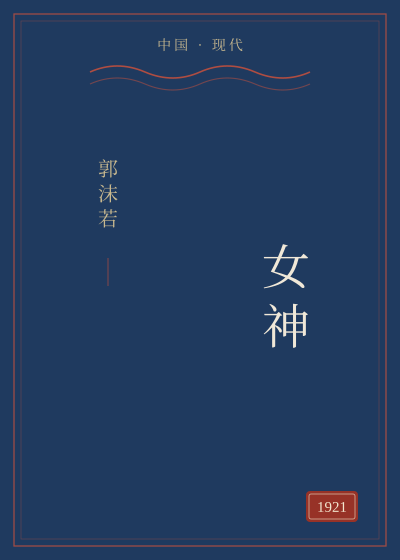
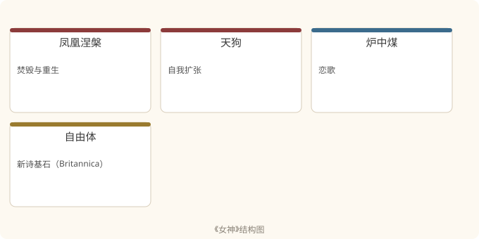

女神
一、基本信息
| 作者 | 郭沫若 |
|---|---|
| 成书/出版 | 1921年出版（Britannica：Nü shen (1921; Goddess)） Guo Moruo — Encyclopaedia Britannica（百科全书） |
| 国别/地区 | 中国 |
| 时代 | 现当代 · 现代 |
| 体裁 | 诗集 |
| 语言 | 汉语（白话自由体） |

《女神》结构图（主题·结构图）
二、创作背景
Britannica：郭沫若发表于《时事新报》的新诗后辑为《女神》；其出版 laid the first cornerstone for the development of new verse in China（为中国新诗发展奠定第一块基石——Britannica）。
时代：五四运动前后，个性解放与科学民主的呐喊（通说）。
三、内容脉络
《凤凰涅槃》：集焚毁与重生之大成（通说）。
《天狗》：『我是一条天狗』式的自我扩张（篇名通说）。
《炉中煤》《地球，我的母亲》等：恋歌与颂歌（通说）。
四、主要人物表
| 人物 | 身份 | 说明 |
|---|---|---|
| 诗人自我 | 抒情主体 | 『天狗』式吞日月的自我（通说） |
五、主题与艺术特点
- 浪漫主义：火山喷发式的激情（通说）。
- 破坏与创造：涅槃重生的民族寓言（通说）。
- 自由体：不受旧格律束缚——新诗基石（Britannica）。
六、影响与评论
- Britannica：为中国新诗发展奠定第一块基石（laid the first cornerstone for the development of new verse in China）。
Guo Moruo — Encyclopaedia Britannica（百科全书） - Britannica：郭沫若在每个文类上都极其多产（enormously prolific in every genre）——《女神》为诗的起点。
Guo Moruo — Encyclopaedia Britannica（百科全书）
七、阅读建议
难点
- 惠特曼式自由体的节奏——需朗读。
- 泛神论底色（歌德/泰戈尔/庄子——通说待核）。
- 《女神》（人民文学出版社，通说待核）。
- 《郭沫若全集·文学编》（科学出版社？通说待核）。
先读《凤凰涅槃》《天狗》→ 对照胡适《尝试集》（通说）看新诗起点之争。
八、待核实
- 初版1921年8月上海泰东书局说待核。
- 泛神论底色与泰戈尔影响考订待核。
- 《凤凰涅槃》自注（1920年作说）待核。
本页主要来源
郭沫若的其他收录作品：女神